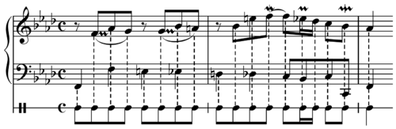
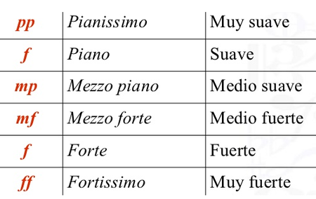

ELEMENTOS MUSICALES
La música cuenta con cuatro elementos esenciales que son: el ritmo, la melodía, la armonía y los matices, aunque para algunos este último no es tenido en cuenta como tal.
Otras propuestas adicionan el timbre como un elemento más a parte de ser una cualidad del sonido. La forma en que se definen estos elementos varía de una cultura a otra y también hay variaciones
temporales.
La base de la música se encuentra en el ritmo, es éste quien da los cimientos para que todo este contructo mantenga un orden y equeilibrio, es quien da el sentido temporo espacial que es complementado
por los aportes que hacen los otros elementos.
Encontramos que el ritmo puede tener tantas aplicaciones por lo tanto es utilizable en
la distribución de las duraciones sonoras en el tiempo y en el espacio, además, desempeña un tabajo como en la
pauta de repetición a intervalos regulares y en ciertas ocasiones irregulares de sonidos fuertes o débiles, y silencios en una composición.
El ritmo está relacionado con cualquier movimiento que se repite con regularidad en el tiempo, en la música se lo divide por medio de la combinación de sonidos y silencios de distinta duración.

Es una sucesión coherente de sonidos y silencios que se desenvuelve en una secuencia lineal y que tiene una identidad y significado propio dentro de un entorno sonoro particular.
La melodía parte de una base conceptualmente horizontal, con eventos sucesivos en el tiempo y no vertical, incluye cambios de alturas y duraciones, y en general incluye patrones interactivos de cambio y calidad.
Es la superposición de sonidos que se producen simultáneamente, el arte de conformar acorde.
es ciencia y arte a la vez. Es ciencia porque enseña a combinar los sonidos de acuerdo a las reglas inmutables con el fin de construir acordes, y es arte porque
de la habilidad y el buen gusto de la conducción de las voces armónicas resultará el trabajo realizado más o menos musical.
Es la intención, el color o dinámica que se da a la música.Son las diferentes gradaciones que se puede dar a una sonido o frase musical.
Así como las dinámicas que se aplican para enriquecer el hecho musical.
Los matices puden ser de dos clases: Dinámicos, que tienen que ver con la intensidad de los sonidos y agógicos, relacionados con las duraciones o el tempo de los sonidos.

Regresar a la pagina